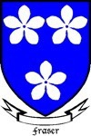
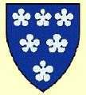

375570 Sir Knight Alexander Forbes 2nd of Pitsligo & Kynnaldy
* 1425 Pitsligo, Aberdeenshire.Scotland
† 1477-03 Pitsligo, Aberdeenshire.Scotland
Riddare
Blev högst 52 år
* 1425 Pitsligo, Aberdeenshire.Scotland
† 1477-03 Pitsligo, Aberdeenshire.Scotland
Riddare
Blev högst 52 år
751140 Sir Knight William Forbes 1st of Pitsligo & Kynnaldy
* omkring 1392 Druminnor, Aberdeenshire, Scotland
† 1445-01-24 Arbroath, Angus, Scotland
Riddare
Blev ca 53 år
* omkring 1392 Druminnor, Aberdeenshire, Scotland
† 1445-01-24 Arbroath, Angus, Scotland
Riddare
Blev ca 53 år

751141 Agnes Fraser of Philorth
* omkring 1395 Philorth, Aberdeenshire, Scotland
* omkring 1395 Philorth, Aberdeenshire, Scotland
1502282 Sir William Fraser 2nd of Philorth
* omkring 1376 Philorth, Aberdeenshire, Scotland
† före 1441 Philorth, Aberdeenshire, Scotland
Blev ca 64 år
* omkring 1376 Philorth, Aberdeenshire, Scotland
† före 1441 Philorth, Aberdeenshire, Scotland
Blev ca 64 år

3004564 Alexander Fraser 1st of Philorth
* omkring 1339 Cowie, Kincardineshire, Scotland
† före 1411 Scotland
Sheriff of Aberdeen, Riddare
Blev ca 71 år
* omkring 1339 Cowie, Kincardineshire, Scotland
† före 1411 Scotland
Sheriff of Aberdeen, Riddare
Blev ca 71 år

3004565 Lady Joanna de Ross
* 1345 Scotland
† före 1400 Scotland
Lady of Philorth
Blev högst 54 år
* 1345 Scotland
† före 1400 Scotland
Lady of Philorth
Blev högst 54 år

1502283 Lady Eleanor Douglas of Douglas
* omkring 1375 Douglasdale, Lanarkshire, Scotland
† omkring 1425 Scotland
Blev ca 50 år
* omkring 1375 Douglasdale, Lanarkshire, Scotland
† omkring 1425 Scotland
Blev ca 50 år
3004566 Earl James Douglas 2nd Earl of Douglas
* 1358 Douglasdale, Lanarkshire, Scotland
† 1388-08-14 Slaget vid Otterburn
Blev högst 30 år
* 1358 Douglasdale, Lanarkshire, Scotland
† 1388-08-14 Slaget vid Otterburn
Blev högst 30 år
3004567 Okänd